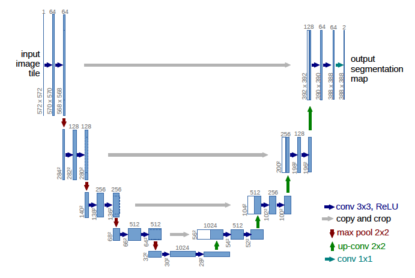

UNet
UNet model architecture is widely used across different models. This model gained traction from paper on image segmentation which is U-Net: Convolution Networks for Biomedical Image Segmentation. This model has downsampling and upsampling part. 
Implementation
This model takes the image tile and outputs segmentation map. To make this model let's assume the input image tile as following: $$ X \in \mathbb{R}^{572 \times 572} $$
First model will have the input convolution in which the input image tile is mapped from 1 channel to 64 channels. Then it will pass through series of downsampling blocks. Output of each downsampling blocks will be appended to a list except the last one, which will be used for skip connection. The output of downsampling Mudulelist will be fed into series of updampling blocks which will give feature map with 64 channels. This is finally fed into the output convolution mapping to the final 2 channels.
input_conv = nn.Sequential(
nn.Conv2d(1, base_channel, 3, padding=0),
nn.Conv2d(base_channel, base_channel, 3, padding=0)
)
for idx, mult in enumerate(channel_mult):
if idx == 0:
in_channel = base_channel
out_channel = base_channel * mult
else:
in_channel = out_channel
out_channel = base_channel * mult
downsampling_blocks.append(
nn.Sequential(
nn.MaxPool2d(2),
nn.Conv2d(in_channel, out_channel, 3, padding=0),
nn.Conv2d(out_channel, out_channel, 3, padding=0)
)
)
rev_channel_mult = channel_mult[::-1]
for idx, mult in enumerate(rev_channel_mult):
if idx == len(rev_channel_mult) - 1:
in_channel = base_channel * mult
out_channel = base_channel
else:
in_channel = base_channel * mult
out_channel = base_channel * rev_channel_mult[idx+1]
upsampling_blocks.append(
nn.Sequential(
nn.ConvTranspose2d(in_channel, out_channel, 2, stride=2, padding=0),
nn.Conv2d(in_channel, out_channel, 3, padding=0),
nn.Conv2d(out_channel, out_channel, 3, padding=0)
)
)
out_conv = nn.Conv2d(base_channel, 2, 3, padding=0)
# Forward Pass
x = torch.randn(1, 1, 572, 572) # (B, C, H, W)
# Encoder path - store skip connections
skip_connections = []
# Input Convolution
h = input_conv(x)
skip_connections.append(h)
for i, d_block in enumerate(downsampling_blocks):
h = d_block(h)
if i < len(downsampling_blocks) - 1:
skip_connections.append(h)
# Reverse the skip connections to match the order of upsampling order
skip_connections = skip_connections[::-1]
# Decoder path - use skip connections
for i, u_block in enumerate(upsampling_blocks):
h = u_block[0](h)
skip = skip_connections[i]
# Crop skip connection if needed (to match the spatial dimensions)
# This handles cases where the dimensions don't match exactly
_, _, h_h, h_w = h.shape
_, _, s_h, s_w = skip.shape
if h_h != s_h or h_w != s_w:
# Center crop the skip connection
diff_h = (s_h - h_h) // 2
diff_w = (s_w - h_w) // 2
skip = skip[:, :, diff_h:s_h-diff_h, diff_w:s_w-diff_w]
# Concatenate along channel dimension
h = torch.cat([h, skip], dim=1)
# Apply remaining convolutions
h = u_block[1](h) # First Conv2d (handles doubled channels)
h = u_block[2](h) # Second Conv2d
# Final output convolution
h = out_conv(h)
logger.info(f"Final output shape: {h.shape}")
Final Model
class UNet(nn.Module):
def __init__(self, channel_mult, base_channel):
super(UNet, self).__init__()
self.channel_mult = channel_mult
self.base_channel = base_channel
self.input_conv = nn.Sequential(
nn.Conv2d(1, base_channel, 3, padding=0),
nn.Conv2d(base_channel, base_channel, 3, padding=0)
)
self.downsampling_blocks = nn.ModuleList()
self.upsampling_blocks = nn.ModuleList()
for idx, mult in enumerate(channel_mult):
if idx == 0:
in_channel = base_channel
out_channel = base_channel * mult
else:
in_channel = out_channel
out_channel = base_channel * mult
self.downsampling_blocks.append(
nn.Sequential(
nn.MaxPool2d(2),
nn.Conv2d(in_channel, out_channel, 3, padding=0),
nn.Conv2d(out_channel, out_channel, 3, padding=0)
)
)
for idx, mult in enumerate(channel_mult[::-1]):
if idx == len(channel_mult[::-1]) - 1:
in_channel = base_channel * mult
out_channel = base_channel
else:
in_channel = base_channel * mult
out_channel = base_channel * channel_mult[::-1][idx+1]
self.upsampling_blocks.append(
nn.Sequential(
nn.ConvTranspose2d(in_channel, out_channel, 2, stride=2, padding=0),
nn.Conv2d(in_channel, out_channel, 3, padding=0),
nn.Conv2d(out_channel, out_channel, 3, padding=0)
)
)
self.out_conv = nn.Conv2d(base_channel, 2, 3, padding=0)
def forward(self, x):
"""
Args:
x: Tensor of shape (B, 1, H, W)
Returns:
Tensor of shape (B, 2, H, W)
"""
h = self.input_conv(x)
skip_connections = []
for i, d_block in enumerate(self.downsampling_blocks):
h = d_block(h)
if i < len(self.downsampling_blocks) - 1:
skip_connections.append(h)
# Reverse the skip connections to match the order of upsampling order
skip_connections = skip_connections[::-1]
# Decoder path - use skip connections
for i, u_block in enumerate(self.upsampling_blocks):
h = u_block[0](h)
skip = skip_connections[i]
# Crop skip connection if needed (to match the spatial dimensions)
# This handles cases where the dimensions don't match exactly
_, _, h_h, h_w = h.shape
_, _, s_h, s_w = skip.shape
if h_h != s_h or h_w != s_w:
# Center crop the skip connection
diff_h = (s_h - h_h) // 2
diff_w = (s_w - h_w) // 2
skip = skip[:, :, diff_h:s_h-diff_h, diff_w:s_w-diff_w]
# Concatenate along channel dimension
h = torch.cat([h, skip], dim=1)
# Apply remaining convolutions
h = u_block[1](h) # First Conv2d (handles doubled channels)
h = u_block[2](h) # Second Conv2d
# Final output convolution
h = self.out_conv(h)
return h